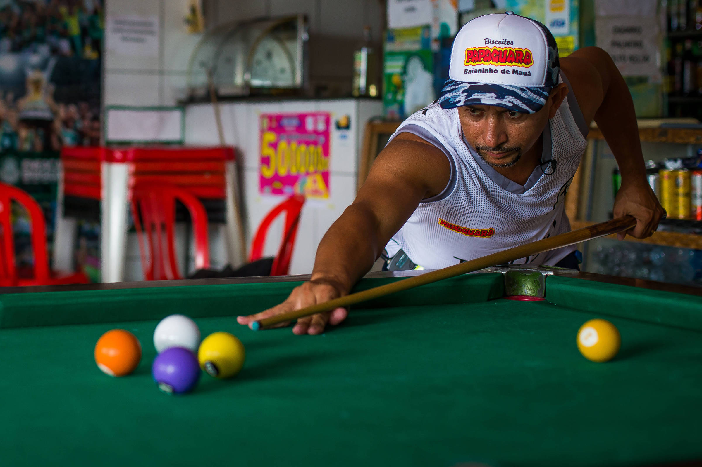
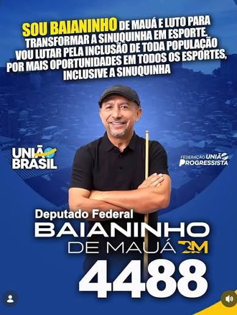

História do Baianinho
Josué Ramalho da Silva (nascido em 11 de novembro de 1973, em Paulo Afonso, Bahia), conhecido como Baianinho de Mauá ou o "Bruxo da Sinuca", é um dos maiores nomes da sinuquinha no Brasil
Mudança para São Paulo e profissionalização
De pedreiro a jogador: Aos 19 anos, mudou-se para Ribeirão Preto e depois para Mauá, no ABC Paulista, a convite do irmão para trabalhar como ajudante de pedreiro
Virada de chave: Após ganhar em poucas horas de sinuca o equivalente a dois salários da construção civil, decidiu abandonar o trabalho de pedreiro e viver do esporte.
O apelido: O nome artístico Baianinho de Mauá consolidou-se quando ele passou a vencer grandes desafios e apostas nos bares e salões de Mauá

